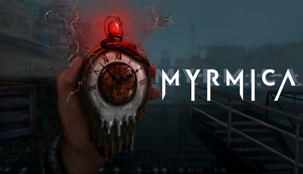

Gameplay and IA
Developer

As a game developer, my journey has been a blend of creativity and technical problem-solving. The development of Myrmica, a game where gameplay and AI intertwine, has been an incredible challenge that allowed me to showcase my skills in both areas. It’s not just about creating engaging gameplay; it's about designing intelligent systems that enhance the player experience and create dynamic, immersive worlds. Myrmica, which is centered around AI-driven mechanics, involves complex algorithms that make the game's characters react to the environment in ways that feel natural. By implementing artificial intelligence, I focused on creating behaviors that allow the in-game characters to make decisions, learn from player actions, and evolve throughout the game. These AI components include pathfinding, decision trees, and complex combat strategies that adapt based on the environment and player interaction. One of the most exciting aspects of Myrmica is its blend of gameplay mechanics with artificial intelligence. Unlike traditional games where NPCs follow scripted behaviors, the AI in Myrmica reacts to the players actions, providing an ever-changing experience. For example, enemies don’t just follow simple patterns; they assess the situation, take cover, and adapt their strategies as the player progresses. This creates a more challenging and rewarding experience for players who enjoy strategic gameplay.